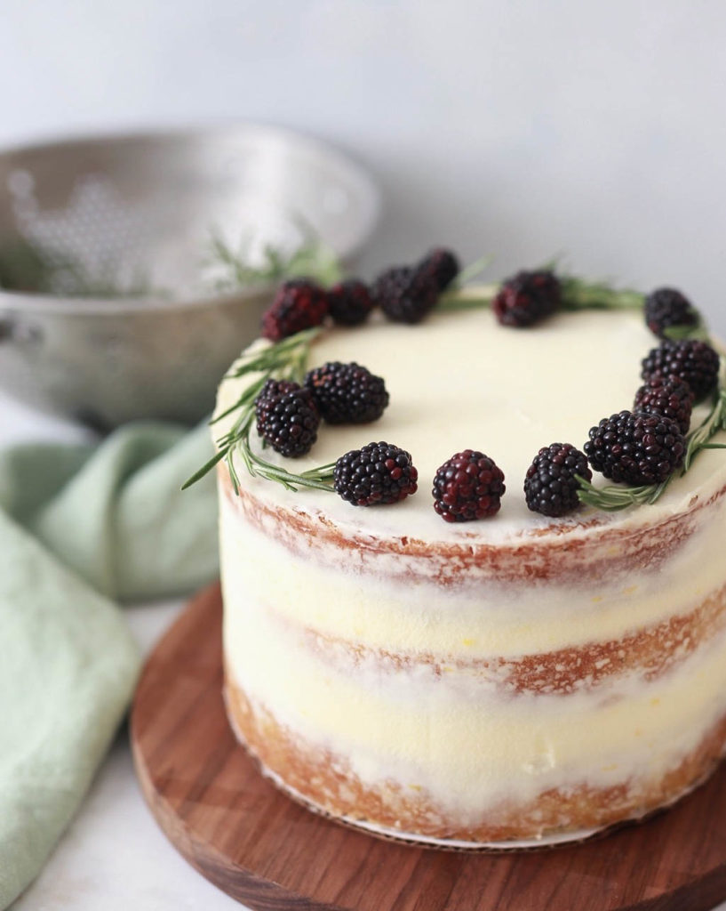

Home
Lemon Rosemary Olive Oil Cake with Blackberry Curd and Marscapone
Buttercream

Description
A subtly herbal layer cake filled with sweet-tart blackberry curd, frosted
semi-naked style with lightly sweetened mascarpone icing.
Ingredients
Lemon Rosemary Olive Oil Cake Layers
4 large eggs at room temperature
1.5 tsp table salt or fine sea salt
3 medium lemons zested and juiced
1.5 tbsp finely chopped fresh rosemary
1 1/3 to 1 1/2 cups whole milk
1 1/3 cup extra virgin olive oil
Blackberry Curd
75 g unsalted butter at room temperature, cut into pats
Mascarpone Buttercream
6 oz. unsalted butter at room temperature
12 oz. mascarpone cheese at room temperature
Decorations
fresh blackberries and rosemary springs
Steps
Blackberry Curd
-
Rinse the blackberries, then place them in a microwave-safe bowl and
microwave on high for 1 minute. Use a fork to mash the berries,
releasing their juices. Then press the mashed berries through a sieve
until you have 1/2 cup blackberry juice.
-
Have the cornstarch and lemon juice measured out and ready to go –
you'll need to quickly combine them later.
-
In a small, heavy-bottomed saucepan, whisk together the egg, egg yolks,
sugar, and blackberry juice. Place on the stove on low heat, and add the
butter. Heat, whisking constantly, until the butter melts and the
mixture is steaming hot and starting to thicken–about 160-170 degrees F.
This could take anywhere from approximately 6-12 minutes.
-
Quickly whisk together the cornstarch and lemon juice and add this
slurry to the blackberry mixture on the stove. Continue whisking until
the curd thickens substantially and the whisk leaves a trail as you mix.
If you, like me, are comforted by exactitude, look for a temperature of
185 F on an instant read thermometer. At that point, remove the curd
from the stove and continue whisking for a minute or two to stop the
cooking.
-
Scrape the curd into a clean bowl or pyrex container or similar, and
cover with plastic wrap, placing the wrap directly on the surface of the
curd. Allow to cool to room temperature, then transfer to the
refrigerator and chill for at least 6 hours or overnight.
Lemon Rosemary Olive Oil Cake Layers
-
Place a rack in the center of the oven and preheat the oven to 350 F.
-
Grease three 8-inch cake pans, line the bottom and sides with parchment
paper, and grease the parchment.
-
In a medium bowl, whisk together the flour, baking powder, baking soda,
and salt. Set aside.
-
Finely zest and juice the lemons. Measure the juice — you should have
about 1/2 to 2/3 cup. Place the juice in a large (at least 2-cup
capacity) liquid measuring cup or jug, and add enough milk to equal 2
cups total of liquid.
-
In a medium bowl (or the same measuring jug you've been using, if it's
big enough), whisk together the milk-lemon juice mixture, lemon zest,
finely chopped rosemary, and olive oil. Set aside.
-
In a stand mixer with the whisk attachment, beat together the eggs and
sugar for two minutes on medium speed, until light and thick.
-
Add 1/3 of the flour mixture to the eggs/sugar, mixing until just
combined. Follow with 1/2 the olive oil mixture, mixing again until just
combined. Scrape down the sides of the bowl, then repeat. End with the
final 1/3 of the flour mixture. When that final addition of dry
ingredients is almost incorporated turn off the mixer, and use a rubber
or silicone spatula to scrape down the sides of the bowl and incorporate
any lingering dry bits.
-
Divide the cake batter between the three prepared pans — you'll end up
with about 605 g of batter in each pan.
-
Place in the preheated oven and bake for about 33-37 minutes, until a
wooden skewer inserted in the middle of each layer comes out clean. (If
you are unsure whether your oven runs hot or cold, start checking at 30
minutes to be safe.)
-
Remove cakes from the oven and cool for 10-20 minutes in the pan, then
turn them out onto a wire rack to cool completely.
-
When the cake layers are completely cool, use a serrated knife to level
the tops.
-
At this point, the cake can be assembled and frosted, or you can freeze
the layers until you're ready to assemble the cake.
-
If you're freezing the cake layers, double wrap each layer in plastic
wrap, then place in a plastic freezer bag. stack the layers on a baking
sheet or pan to stabilize them, and place the pan in the freezer. (You
can leave them in the freezer for up to 2-3 weeks.)
Mascarpone Buttercream
-
Using a stand mixer or electric mixer, blend together the butter and
mascarpone until light and fluffy. Add the powdered sugar, a bit at a
time, until you reach your desired sweetness level. Blend in the lemon
juice and lemon zest.
Assembly
-
Place one cake layer, cut side up, on cake stand or board. Pipe a
generous ring of icing around the edge. Fill the center with half the
blackberry curd.
-
Place a second cake layer, cut side DOWN, on top of the
first. Again, pipe a generous ring of icing around the edge, then fill
the center with the remaining blackberry curd.
-
Place the final layer on top, cut side down. Spread a generous amount of
icing on top of the cake, then use a bench scraper or offset spatula to
smooth the icing over the top and around the sides. (If you're going for
a "naked" or "semi-naked" look, you will probably have a bit of icing
leftover.)
- Decorate with fresh blackberries and rosemary sprigs.